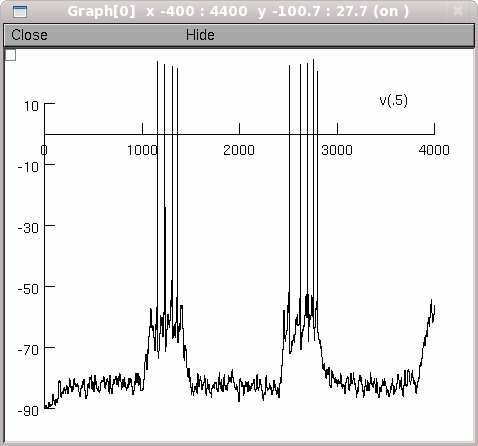
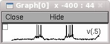

NEURON mod files from the paper: Altered architecture and functional consequences of the mesolimbic dopamine system in cannabis dependence. Saturnino Spiga, Alessandra Lintas, Michele Migliore and Marco Diana Addiction Biology, in press, 2010. The simulation files control.hoc and after-withdrawal.hoc generate the first 4 sec of the simulations in Fig. 7b top and bottom of the paper, respectively. They reproduce the simulations shown in the supplementary movie. In the figure is plotted the range 5<t<10 sec from 15 sec long simulations. Questions on how to use this model should be directed to michele.migliore@pa.ibf.cnr.it Example Usage: Auto-launch from ModelDB or download and extract the archive, compile the mod files and start with either double clicking the mosinit.hoc file (windows), drag and dropping the mosinit.hoc file on the nrngui icon (mac OS X), or typing "nrngui mosinit.hoc" on the command line (linux/unix). Once the simulation is started pressing the "control" button should result in the following graph similar to figure Fig. 7b top:  Note if the above graph is resized it looks more like the paper fig.: 